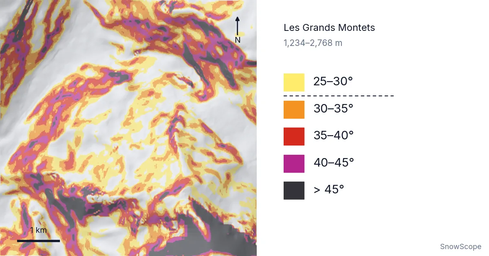
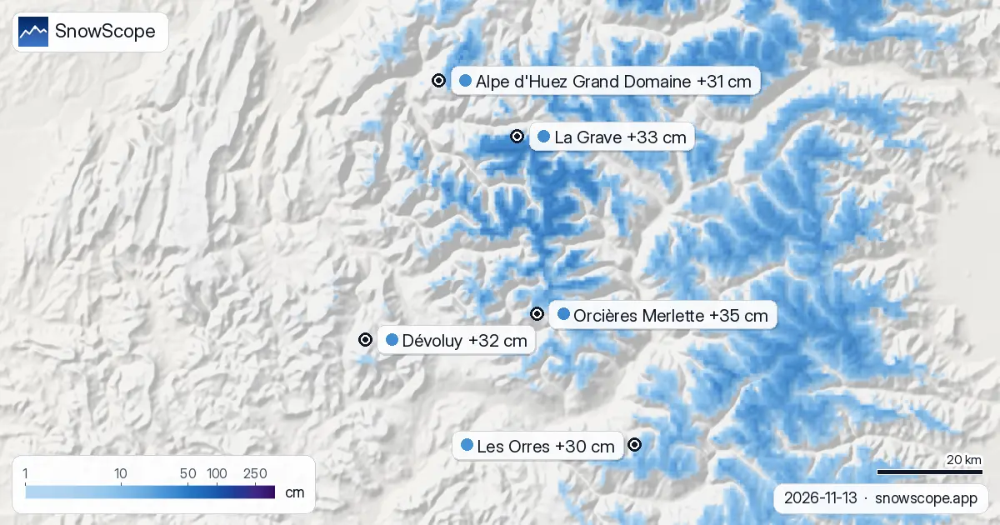

Pendiente y aludes: lo que de verdad significan 30°, 35° y 40° en la montaña
Mira primero el mapa. Cada mancha de color es terreno con más de 25°, y todo lo que queda por debajo de la línea discontinua de la leyenda pasa de 30°. Alrededor de Les Grands Montets, sobre Argentière, casi la mitad de la montaña entre el remonte más bajo y el más alto entra en ese segundo grupo. Esa sola cifra explica mucho sobre los aludes.
Consulta la previsión de nieve en tiempo real de Les Grands Montets en la app SnowScopeEspesor de nieve, alertas de nieve polvo y mapa 3D, gratis.
Qué muestra el mapa
Alrededor del centro de cada estación recortamos un cuadrado de 3 km en cada dirección y solo dejamos el terreno entre su remonte más bajo y el más alto. Después medimos el ángulo de cada pequeño cuadrado de terreno, de unos 13 m de lado. Los colores siguen cinco escalones: 25–30°, 30–35°, 35–40°, 40–45° y más de 45°.
En Les Grands Montets (1.234–2.768 m) el resultado es un 47 % del terreno por encima de 30°, un 28 % por encima de 35° y un 14 % por encima de 40°. El cuadrado más empinado del mapa llega a 67°. Eso es roca, no una pista, y el mapa lo muestra con honestidad en gris oscuro.
Así que la imagen no es un plano de pistas. Muestra la forma de la propia montaña: las palas abiertas, las canales, las paredes de roca y los hombros suaves donde llegan los remontes.
Por qué 30° es el umbral que hay que recordar
Un alud se dispara cuando una capa de nieve ya no puede sujetarse a la capa de debajo. En terreno suave, la gravedad empuja la nieve sobre todo contra la ladera, y las capas se quedan donde están. Cuanto más empinada es la ladera, más tira esa fuerza hacia abajo. Los estudios de aludes reales muestran que la mayoría de las placas de nieve seca se desprenden en pendientes de entre unos 30° y 45°. Una placa es un bloque de nieve firme que se rompe en una sola pieza, y es el tipo de alud que atrapa a más esquiadores.
Por debajo de unos 30°, las placas son raras. Por encima de unos 45°, la nieve suele caer en pequeñas cantidades durante la propia nevada, así que las placas grandes se forman con menos frecuencia. En medio queda la franja donde la nieve está lo bastante inclinada para romperse y aun así acumula la suficiente para ser peligrosa.
Por eso la nueva capa «Inclinación de la pendiente» de la app traza su línea discontinua en 30°. No es una línea de seguridad. Es el punto en que la pregunta cambia de «¿es empinado?» a «¿qué está haciendo hoy la nieve?».
Ocho estaciones lado a lado
El mismo método aplicado a otras siete estaciones da montañas muy distintas. St. Anton se acerca a Les Grands Montets: el 45 % del terreno supera los 30°, el 27 % los 35° y el 14 % los 40°. Le sigue Jackson Hole con un 38 %, un 20 % y un 10 %.
Kicking Horse (32 % por encima de 30°) y la zona de Verbier (31 %) quedan en medio. KitzSki tiene un 28 % por encima de 30°, pero solo un 4 % por encima de 40°. Whistler Blackcomb y Seiser Alm son las más suaves de la lista, con un 15 % del terreno por encima de 30° cada una.
Cuidado con estas cifras. Describen el terreno dentro de nuestro cuadrado, no las pistas balizadas. Whistler Blackcomb tiene mucho terreno alpino empinado; nuestro cuadrado alrededor de su centro simplemente incluye también mucho bosque y laderas suaves. Una cifra baja significa «menos terreno empinado en esta ventana», no «sin terreno de aludes».
¿Hasta qué punto podemos fiarnos?
Un mapa como este suaviza el terreno. Cada cuadrado mide unos 13 m de ancho, así que un resalte corto y empinado, una cornisa o el borde de una canal pueden ser más empinados que cualquier cuadrado del mapa. En la práctica, la pendiente real suele ser unos grados más empinada de lo que dice el mapa, y nunca más suave de un modo en que convenga confiar.
También importa el ángulo de la zona de salida que tienes encima, no solo la pendiente bajo tus esquís. Un fondo de valle llano puede recibir un alud que empezó en una cara de 40° muy por encima. En nuestro mapa, ese fondo llano sigue en blanco. El resto lo tienen que poner tus ojos.
En resumen: los colores te dicen dónde el terreno puede producir aludes. No te dicen si ocurrirá hoy. Eso solo lo deciden la nieve y el tiempo, y el boletín de aludes es donde esa valoración se escribe cada día.
Cómo leer 30°, 35° y 40° sobre el terreno
30–35° (naranja en el mapa): aquí están muchas laderas clásicas de fuera de pista y las pistas negras más empinadas. Puede haber aludes siempre que el manto nivoso tenga una capa débil. Casi todo el mundo subestima esta franja porque no parece muy empinada.
35–40° (rojo): una ladera empinada se mire como se mire. Una caída aquí puede ser larga, y una placa que se rompe puede bajar rápido. Es la franja donde empieza el mayor número de aludes provocados por esquiadores.
40–45° (morado) y más (gris oscuro): corredores, caras y bandas de roca. A veces aquí hay purgas, es decir, nieve suelta y ligera de la superficie que baja por la ladera. Las purgas son pequeñas, pero pueden empujarte por un cortado.
Una prueba sencilla sobre el terreno: coge dos bastones de la misma longitud, uno colgando recto hacia abajo y el otro tocando la ladera en el punto donde el primero toca la nieve. Requiere algo de práctica; un inclinómetro en el móvil o una brújula es más fácil. Mide en la parte más empinada, no donde estás parado.
Consejos para esquiadores
- Usa la pendiente para planificar, no para decidir: el terreno empinado es donde pueden empezar los aludes, el boletín dice si hoy son probables.
- Mira hacia arriba: la ladera que tienes encima importa tanto como la que tienes debajo.
- Fíate menos del mapa en los detalles pequeños; resaltes, canales y la entrada de un corredor suelen ser más empinados de lo que se ve.
- Consulta siempre el boletín oficial de aludes antes de salir fuera de pista, y lleva ARVA, pala y sonda sabiendo usarlos.
Referencias y créditos
- Schweizer, J., Jamieson, J. B. and Schneebeli, M. (2003). Snow avalanche formation. Reviews of Geophysics 41(4), 1016. doi.org/10.1029/2002RG000123
- Servicios Europeos de Aviso de Aludes (EAWS): boletines oficiales de aludes de todas las regiones de Europa. www.avalanches.org/
- SnowScope: La Grave, mitos y realidades – fuera de pista y nieve bajo La Meije. snowscope.app/blog/en/2026/11/la-grave-myths-and-facts-off-piste-la-meije.html
Sobre estas cifras
Ángulos de pendiente: análisis del terreno de SnowScope sobre un modelo de elevación abierto (teselas de unos 13 m), método 3x3 de Horn, clases de la capa «Inclinación de la pendiente» de la app (25, 30, 35, 40, 45°). Ventana: 3 km alrededor del centro de cada estación, terreno entre su remonte cartografiado más bajo y el más alto. Solo inclinación: esto no es un mapa de riesgo de aludes.
Citar este informe
Para investigación, docencia o prensa: cifras y gráficos reutilizables libremente bajo CC BY 4.0 con esta cita.
SnowScope (2026), Pendiente y aludes: lo que de verdad significan 30°, 35° y 40° en la montaña, https://snowscope.app/blog/es/2026/11/slope-angle-avalanche-terrain-30-35-40-degrees.html, consultado el 2026-11-10
SnowScope (Atlas Labs). (2026, November 10). Pendiente y aludes: lo que de verdad significan 30°, 35° y 40° en la montaña. SnowScope snow reports. https://snowscope.app/blog/es/2026/11/slope-angle-avalanche-terrain-30-35-40-degrees.html
BibTeX
@misc{snowscope2026slopeangleavalancheterra,
author = {{SnowScope (Atlas Labs)}},
title = {Pendiente y aludes: lo que de verdad significan 30°, 35° y 40° en la montaña},
year = {2026},
month = nov,
howpublished = {\url{https://snowscope.app/blog/es/2026/11/slope-angle-avalanche-terrain-30-35-40-degrees.html}},
note = {Published 2026-11-10 17:43 UTC; accessed 2026-11-10}
}· CC BY 4.0 · Métodos, datos y herramientas →
Les Grands Montets: nieve y temperatura según la altura, este invierno vs el pasado (herramientas) →
Sigue Les Grands Montets
Gratis: un aviso cuando llega la nieve y la previsión cada mañana.
Más partes de nieve

La tabla de hoy ordena las estaciones de Europa, Marruecos y Norteamérica por nieve nueva prevista en las próximas 24 horas y hasta el 10 de …

Nuestro modelo de nieve para el 5 de noviembre de 2026 predice hasta 94 cm de nieve nueva en el oeste de Canadá para el domingo, con nevadas significativas también en los Alpes y el oeste de EE. UU.

Nuestro modelo de nieve predice que Whistler Blackcomb recibirá 88 cm de nieve nueva para el lunes 16 de noviembre de 2026, liderando los centros turísticos globales.